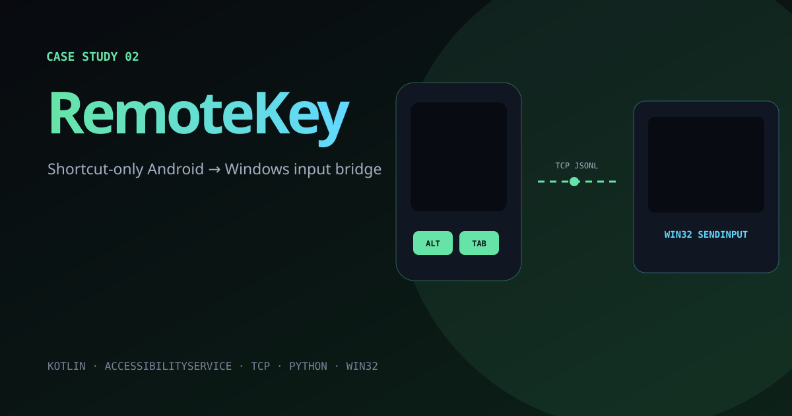
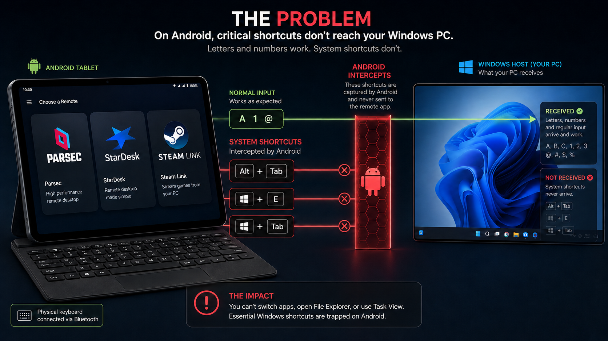
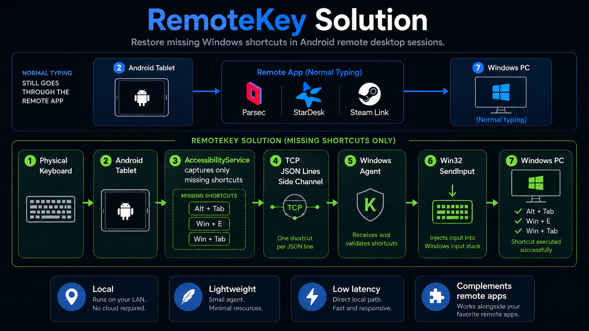
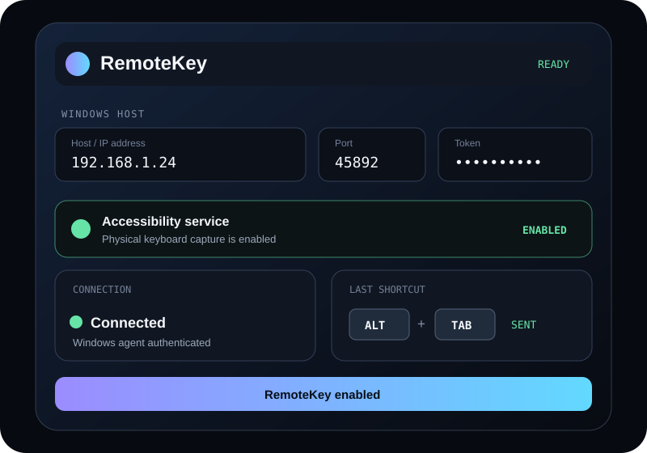
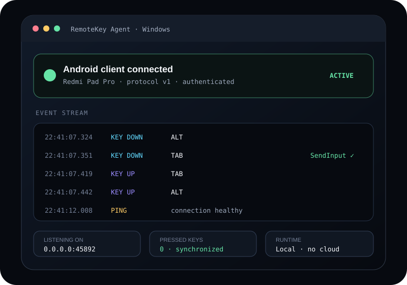

Preserves the remote app’s native low-latency path.
Android + Windows · Remote input utility
RemoteKey
A lightweight Android-to-Windows shortcut bridge that restores Alt+Tab, Win+E and Win+Tab in remote sessions using Parsec, StarDesk, Steam Link and similar apps.

01 · The problem
System shortcuts disappear before the remote app sees them.
Physical keyboards usually work for letters, numbers and mouse input in Android remote desktop sessions. The failure appears when a desktop-level shortcut is needed.
Android or vendor firmware may consume Alt+Tab, Win+E and Win+Tab before Parsec, StarDesk or Steam Link receives the event. The remote app cannot forward an input it never sees.
Alt+Tab
Switch Windows applications
Win+E
Open File Explorer
Win+Tab
Open Task View

02 · The solution
A dedicated side channel for only the missing shortcuts.
RemoteKey leaves screen streaming, mouse input and normal typing inside the existing remote application. It handles only the combinations Android prevents that application from receiving.
- 1Capture on Android
An AccessibilityService watches the physical keyboard and intercepts only supported shortcut combinations.
- 2Relay locally
Compact JSON Lines events travel over a small TCP side channel on a trusted LAN or private VPN.
- 3Recreate on Windows
The Windows agent maps the keys and calls Win32 SendInput to perform the intended desktop action.

03 · Product demo
What the two ends of the product look like.
These interface previews show the setup and runtime states implemented by the Android client and Windows agent.


04 · Technical snapshot
Small surface area, clear responsibilities.
The portfolio keeps the implementation summary concise. Setup instructions, protocol details, security boundaries and tests remain in the repository documentation.
- Android
- Kotlin · AccessibilityService
- Transport
- TCP · JSON Lines
- Windows
- Python · Win32 SendInput
- Shortcuts
- Alt+Tab · Win+E · Win+Tab
- Environment
- Android 8+ · Windows 10/11
Releases tracked keys when state or connectivity changes.
Runs without a cloud service on a trusted network.
05 · Outcome
Restoring desktop control without rebuilding remote desktop.
RemoteKey solves a narrow but disruptive input problem. It complements existing remote tools instead of competing with them, preserving their optimized video, mouse and keyboard paths while restoring only the Windows shortcuts Android removes.